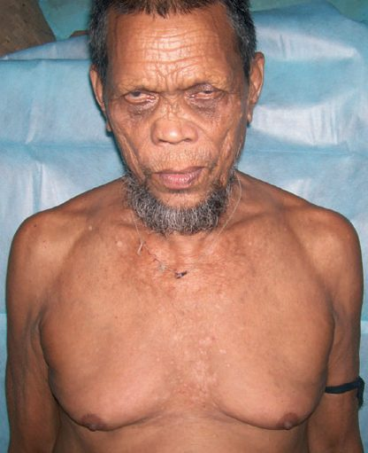
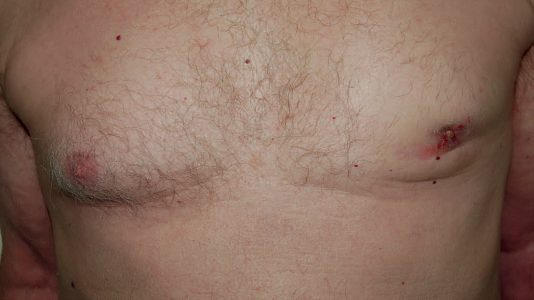

Gynecomastia
Summary
- Gynecomastia is hyperplasia of male breast tissue and the commonest male breast condition, presenting as concentric swelling of breast tissue with or without tenderness and needing to be distinguished from pseudogynaecomastia (excess fat) and from male breast cancer [1].
- It occurs physiologically in neonates, at puberty, and in senescence, and is frequently idiopathic [2][3].
- The great majority of cases regress spontaneously, and reassurance with treatment of any underlying cause is the mainstay of management, with surgery reserved for persistent or cosmetically unacceptable disease [1][2].
- No NICE guideline covers gynaecomastia.
- The two UK documents that do are of very different kinds and pull in opposite directions: the ABS multi-college diagnostic guidelines set out a detailed assessment pathway including which men to refer, which blood tests to send and when to biopsy [4]; while the Academy of Medical Royal Colleges / NHS England Evidence-Based Interventions programme states, as statutory guidance, that surgery for gynaecomastia is not routinely funded by the NHS [5].
- The practical consequence is that in the UK the assessment is thorough and protocolised, while the operation the textbooks describe is, for most patients, unavailable.
Definition
- Gynaecomastia is the benign growth of breast tissue in males, in which the breast is uniformly enlarged and soft [6].
- It is hyperplasia of male breast tissue and the commonest male breast condition [1].
- Hypertrophy of breast tissue in males is a clinical entity for which there is frequently no identifiable cause, and it should be differentiated from pseudogynecomastia, which is simply an increase in breast fat [7].
- Gynaecomastia represents an abnormal development of the ductal and/or stromal elements of the rudimentary male breast [3].
- In gynecomastia the ductal structures of the male breast enlarge, elongate, and branch with a concomitant increase in epithelium [8].
Pathophysiology
Physiological gynaecomastia occurs in three age groups: transient enlargement in male infants due to maternal oestrogens crossing the placenta; breast development in adolescents caused by a temporary imbalance of adrenal and testicular steroid hormones during puberty; and enlargement in middle-aged and older men, which may be predominantly fatty and linked to obesity, or more glandular, reflecting subtle changes in the male-to-female hormone ratio with ageing as adipose tissue metabolises adrenal androgens to oestrogens [3].
Underlying disease mechanisms fall into four groups [1]:
| Mechanism | Causes |
|---|---|
| Increased oestrogen production | Testicular, adrenal or lung tumours |
| Increased peripheral oestrogen aromatisation | Liver, adrenal or thyroid disease; starvation refeeding |
| Decreased androgen production | Bilateral cryptorchidism or torsion, orchitis, hyperprolactinaemia, chromosomal abnormalities such as Klinefelter's syndrome, renal failure |
| Androgen resistance | Testicular feminisation |
Table reformats the disease mechanisms underlying gynaecomastia [1]. Impaired liver function, of whatever cause, reduces the ability of the liver to metabolise oestrogen, resulting in breast stimulation and gynaecomastia [3]; the endocrine abnormalities of liver failure produce hypogonadism and gynaecomastia [9].
During puberty, gynecomastia is often unilateral and typically occurs between ages 12 and 15 years, whereas senescent gynecomastia is usually bilateral. Gynecomastia generally does not predispose the male breast to cancer, although the hypoandrogenic state of Klinefelter syndrome (XXY), in which gynecomastia is usually evident, is associated with an increased risk of breast cancer [8].
Clinical features
- Gynaecomastia presents with concentric swelling of breast tissue with or without tenderness [1].
- The patient complains of painless, or slightly tender, enlargement of one or both breasts.
- There is sometimes a clearly palpable disc of firm breast tissue behind the areola, the usual form seen in younger males, while in older males the enlargement tends to be more diffuse with a fatty element, and there is no associated axillary lymphadenopathy [3].
- Bedside assessment uses a 2 cm pinch test [2].
- Anti-androgen therapy for prostate cancer causes gynaecomastia and nipple tenderness in about 60% of patients [10].
Distinguishing gynaecomastia from male breast carcinoma
This is the single decision the clinical examination has to make, and the discriminating features are consistent across sources [7]:
| Feature | Gynaecomastia | Male breast carcinoma |
|---|---|---|
| Shape and distribution | Smooth, firm, saucer-shaped, symmetrically distributed beneath the areola | Asymmetrically located beneath or beside the areola |
| Tenderness | Frequently tender | Usually not tender |
| Fixation | Not fixed | May be fixed to overlying dermis or deep fascia |
| Axilla | No associated lymphadenopathy | Nodes may be involved |
Table reformats the discriminating features [3][7]. The differential diagnosis of a male breast mass includes gynecomastia alongside primary breast carcinoma, metastasis to the breast, sarcoma, and breast abscess [7].

Etiology
Physiological causes typically occur in neonates, during puberty, or in senescence and are usually self-limiting [1].
Drugs
Pharmacological causes are numerous and a full drug history (including illicit and recreational use) is essential [1]:
| Class | Examples |
|---|---|
| Hormones | Anabolic steroids, oestrogen agonists, anti-androgens |
| Cardiovascular | Digoxin, spironolactone, amiodarone, nifedipine, ACE inhibitors, verapamil |
| Anti-ulcer | Omeprazole, ranitidine, cimetidine |
| Antibiotics | Metronidazole, minocycline, ketoconazole |
| Psychiatric | Diazepam, tricyclics, phenothiazines |
| Antiretroviral | Antiretroviral drugs as a class |
| Recreational | Alcohol, cannabis, heroin |
| Others | Metoclopramide, phenytoin, methyldopa, penicillamine, domperidone |
- Table reformats the drug causes of gynaecomastia [1].
- Drug-induced gynaecomastia is typically associated with anti-androgenic drugs used for prostate cancer, digoxin, and proton pump inhibitors, and in younger males recreational anabolic steroid and cannabis use is an important cause [3].
- Senescent gynecomastia can be caused by digoxin, thiazides, oestrogens, phenothiazines, theophylline and cannabis [7], and it is associated with cimetidine, spironolactone and marijuana, being idiopathic in most cases [2].
Systemic disease
- Gynecomastia may be a systemic manifestation of hepatic cirrhosis, renal failure, malnutrition, hypogonadism, testicular tumours, and hyperthyroidism [7].
- Mechanisms include neoplasms of the testis, lung carcinoma, and cirrhosis [8].
- Gynaecomastia is a feature of mixed gonadal dysgenesis associated with gonadoblastoma, and around 5% of testicular tumour cases (mainly non-seminomatous germ cell tumours) have gynaecomastia [12].
Diagnosis
- Investigations should exclude breast cancer through history and examination of the breast, axillae, testes, and abdomen, with ultrasound of the breast and core biopsy as indicated, and should exclude pathological causes with U&Es, LFTs, GGT, prolactin, alpha-fetoprotein, β-HCG, and testosterone [1].
- A history of recent illness and a full drug history are essential, and general examination should include the abdomen (liver) and scrotum (testes) to identify a likely cause [3].
- Mammography and ultrasonography can be used to discriminate between gynecomastia and a suspected malignancy [7].

- The base rates the UK guidance opens with are the ones to quote to an anxious patient.
- Male breast cancer is rare (around 300 cases diagnosed per year in the UK, against around 46,000 in women) whereas gynaecomastia is a very common finding in normal men, with peaks of around 60% at puberty and over 50 years
- Numerous drugs and a variety of medical conditions including testicular tumours may be associated with it, and cancer is diagnosed in only about 1% of cases of male breast enlargement [4].
- Who to refer.
- Referral for further assessment is indicated in men with clinical suspicion of malignancy; no obvious physiological or drug cause; a unilateral lump; persistent pain and swelling; or increased risk such as family history, Klinefelter's syndrome, androgen deficiency or oestrogen excess [4].
- Separately, the primary-care referral list includes male patients over 50 years with a unilateral firm subareolar mass, with or without nipple discharge or associated skin changes, as an urgent referral [4].
- NG12's suspected cancer pathway thresholds are written for "people", not women, so the age-30 unexplained-lump and age-50 unilateral-nipple-change criteria apply to men as well [14].
- What to examine and what to send.
- In addition to the standard assessment of a breast lump, record any relevant history of prescribed, illicit or recreational drug use including alcohol consumption and anabolic steroids
- Record breast findings on the P1–P5 scale and examine the nodal areas, examine the testicles for evidence of tumour, note any evidence of chronic liver disease, differentiate true gynaecomastia from fatty enlargement (pseudogynaecomastia) related to obesity, identify features of feminisation, and consider the need for endocrine referral [4].
Blood tests are targeted rather than routine. A hormone profile (testosterone, oestradiol, prolactin, luteinising hormone, alpha-fetoprotein and β-HCG) together with thyroid and liver function tests should be obtained in men with true gynaecomastia; blood tests are not indicated in those with fatty breast enlargement, physiological pubertal or senile changes, an identified drug cause, or clinically obvious cancer [4].
- Imaging and biopsy.
- Mammography and/or ultrasound should be performed in men with unexplained or suspicious unilateral breast enlargement, with results recorded as M1–M5 and U1–U5, and imaging may also be used where there is clinical uncertainty in differentiating true gynaecomastia from fatty enlargement. Testicular ultrasound should be performed if there is any suspicious finding on testicular examination, or a raised AFP or β-HCG [4].
- Needle core biopsy should be performed following imaging in patients with uncertain or suspicious clinical or radiological findings (any one of P3–P5, U3–U5 or M3–M5) and fine needle aspiration is not to be recommended, a point reinforced as a 95% quality marker [4].
Gynaecomastia is on the short list of presentations that do not require all three arms of triple assessment at one-stop clinic, alongside simple cysts, breast pain and non-bloody nipple discharge [4].
Scoring and Severity
- Gynaecomastia is classified as Grade I, mild with little or no excess skin; Grade II, moderate, with (IIb) or without (IIa) excess skin; and Grade III, severe with excess skin [1].
- Gynecomastia is graded based on the degree of breast enlargement and the position of the nipple-areolar complex [8].
- The grade matters because it selects the operation: surgery is reserved for grade IIb or III disease not responding to conservative measures [1].
Treatment and Management
- Management is largely reassurance, since 80% of cases resolve, together with addressing underlying disease processes and changing or withdrawing the causative drug; tamoxifen may be used medically, although this is not a licensed indication [1].
- Surgery has a limited role, reserved for grade IIb or III disease not responding to the above measures [1].
- The vast majority of cases will regress, and management centres on family reassurance and follow-up [2].
- Surgical intervention is usually not warranted for pubertal hypertrophy but could be considered if gynecomastia fails to regress with observation, is unilateral, or is cosmetically unacceptable [7].
"Surgery for gynaecomastia is not routinely funded by the NHS. This recommendation does not cover surgery for gynaecomastia caused by medical treatments such as treatment for prostate cancer." [5]. This appears within the Evidence-Based Interventions guidance on breast reduction, published January 2019 and last reviewed September 2024, and it is labelled statutory guidance, a stronger designation than the "best practice guidance" label carried by some other entries in the same programme [5].
Read the exception carefully, because it is the clinically important half of the recommendation. Gynaecomastia arising from medical treatment, the paradigm being anti-androgen therapy for prostate cancer, which causes gynaecomastia and nipple tenderness in about 60% of patients, is explicitly outside the scope of the restriction [5].
For comparison, the criteria the same guidance sets for female breast reduction give a sense of the threshold the NHS applies to breast surgery undertaken for symptoms rather than cancer: a full package of supportive care from the GP including weight-loss advice and pain management; physiotherapy assessment where there is thoracic or shoulder girdle discomfort; functional symptoms requiring other treatment such as intractable candidal intertrigo or backache unrelieved by a professionally fitted bra; a planned resection of 500 g or more per breast or at least 4 cup sizes; and a BMI below 27, stable for at least twelve months [5]. Patients must be told that smoking increases complications and that surgery for hypermastia can cause permanent loss of lactation, and surgery will not be funded for cosmetic reasons [5].
- The divergence from the textbooks is one of availability rather than technique.
- The textbooks describe liposuction and open excision with skin reduction as the treatment for grade IIb or III gynaecomastia that has not responded to conservative measures; in the NHS, that operation is not routinely commissioned unless the gynaecomastia was caused by medical treatment.
- The ABS guidelines acknowledge the same reality in their outcome-of-assessment list for men, which includes "assessment of need for surgery and in consideration of local PCT rules" [4].
Surgeries
Surgical options for gynaecomastia not responding to reassurance and medical management (grade IIb or III) are liposuction, or open excision with reduction of excess skin where needed [1]. Correction of male breast tissue is listed among commonly available aesthetic breast surgery procedures [15], and liposuction is indicated, among other uses, to treat gynaecomastia [15].
A nipple-sparing mastectomy can be performed to remove the enlarged breast, with a donut of de-epithelialised skin around the nipple enfolded to remove excess skin, as in a Benelli reduction mammoplasty [7]. Chest contouring surgery in transgender men differs from gynecomastia treatment in that these patients typically present with larger breast volume, excess skin, and ptosis compared with individuals with gynecomastia [16].
Complications
Complications of liposuction, one of the surgical options used to treat gynaecomastia, include early complications, shock from fluid loss, haematoma, seroma, swelling, thermal injury, friction burns, damage to deep structures, DVT and pulmonary embolism, fat embolus, and death, and late complications including contour irregularity, paraesthesiae, discoloration, and lax skin [15].
Gynecomastia is not a risk factor for male breast cancer [7]. The clinically important pitfall is therefore diagnostic rather than oncological: failure to distinguish gynecomastia from primary breast carcinoma, metastasis to the breast, sarcoma, or breast abscess [7].
Prognosis
- Reassurance is appropriate as 80% of cases of gynaecomastia resolve [1], and the vast majority regress [2].
- Pubertal hypertrophy, unless unilateral or painful, may pass unnoticed and regress into adulthood [7].
- Gynecomastia generally does not predispose the male breast to cancer, with the exception of the hypoandrogenic state of Klinefelter syndrome, which is associated with an increased risk of breast cancer [8].
The outcome of a UK male breast assessment is defined as: full clinical assessment, blood tests and imaging as appropriate; advice provided on the management of symptoms including medical therapy; assessment of the need for referral for endocrine assessment; referral back to the GP with a summary of assessment and advice; assessment of the need for surgery in consideration of local commissioning rules; the offer of review for severe or unremitting symptoms; and provision of appropriate patient support [4].
That last item is not boilerplate. Male breast cancer can be a distressing and difficult experience for both men and their families, and appropriate support from the breast care nurse may be needed [4], a point that applies equally to a man discharged with benign gynaecomastia for which the NHS will not fund surgery.
References
- Oxford Handbook of Clinical Surgery, 5th ed., Ch. 6 Breast surgery, Gynaecomastia
- The ABSITE Review, 2022, Ch. 24 Breast – Benign Breast Disease
- Browse's Introduction to the Symptoms and Signs of Surgical Disease, 6th ed., Ch. 13 The breast
- Association of Breast Surgery, Royal College of Radiologists Breast Group, Royal College of Pathologists and partners: Best practice diagnostic guidelines for patients presenting with breast symptoms (November 2010; stated review date November 2012), 1.3 Nipple symptoms; 2.2 One-stop assessment; 2.8 Biopsy; 2.8 Blood tests; 2.8 Breast lumps in men; 2.8 Clinical assessment; 2.8 Imaging; 2.8 Outcome of assessment; 4 Quality indicators, QI15 associationofbreastsurgery.org.uk
- Academy of Medical Royal Colleges / NHS England Evidence-Based Interventions Programme: Breast reduction — statutory guidance (published January 2019, last reviewed September 2024), How up to date is this information?; Recommendation ebi.aomrc.org.uk
- Oxford Handbook of Clinical Surgery, 5th ed., Glossary
- Sabiston Textbook of Surgery, 22nd ed., Ch. 68 Diseases of the Breast
- Schwartz's Principles of Surgery: ABSITE and Board Review, Ch. 17 Breast
- Bailey & Love's Short Practice of Surgery, 28th ed., Ch. 69 The liver
- Oxford Handbook of Clinical Surgery, 5th ed., Ch. 11 Urology, Adenocarcinoma of the prostate
- Bailey & Love's Short Practice of Surgery, 28th ed., Ch. 6
- Bailey & Love's Short Practice of Surgery, 28th ed., Ch. 86 The testis and scrotum
- Bailey & Love's Short Practice of Surgery, 28th ed., Ch. 58
- NICE Guideline NG12: Suspected cancer: recognition and referral (2015, updated 2026), 1.4.1 www.nice.org.uk
- Oxford Handbook of Clinical Surgery, 5th ed., Ch. 17 Plastic surgery, Aesthetic surgery
- Sabiston Textbook of Surgery, 22nd ed., Ch. 29 Gender-Affirming Surgery, Chest Reconstruction: Masculinization